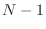
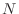
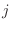

Next: Alignment.salign() align Up: The Alignment class: comparison Previous: Alignment.align3d() align Contents Index
IMPORTANT NOTE: This command is obsolete, and is no longer maintained. It is strongly recommended that you use Alignment.salign() instead.
This command uses the current alignment as the starting point for an iterative least-squares superposition of two or more 3D structures. This results in a new multiple structural alignment. A good initial alignment may be obtained by sequence alignment (Alignment.malign()). For superpositions, only one atom per residue is used, as specified by fit_atoms. The resulting alignment can be written to a file with the Alignment.write() command. The multiply superposed coordinates remain in memory and can be used with such commands as Model.transfer_xyz() if Sequence.atom_file is not changed in the meantime. It is best to use the structure that overlaps most with all the other structures as the first protein in the alignment. This may prevent an error exit due to too few equivalent positions during framework construction.
The alignment algorithm is as follows. There are several cycles, each of which consists of an update of a framework and a calculation of a new alignment; the new alignment is based on the superposition of the structures onto the latest framework. The framework in each cycle is obtained as follows. The initial framework consists of the atoms in structure 1 that correspond to fit_atoms. If there is no specified atom types in any of the residues at a given position, the coordinates for this framework position are approximated by the neighboring coordinates. Next, all other structures are fit to this framework. The final framework for the current cycle is then obtained as an average of all the structures, in their fitted orientations, but only for residue positions that are common to all of them, given the current alignment. Another result is that all the structures are now superposed on this framework. Note that the alignment has not been changed yet. Next, the multiple alignment itself is re-derived in  dynamic programming runs, where  is the number of structures. This is done as follows. First, structure 2 is aligned with structure 1, using the inter-molecular atom-atom distance matrix, for all atoms of the selected type, as the weight matrix for the dynamic programming run. Next, structure 3 is aligned with an average of structures 1 and 2 using the same dynamic programming technique. Structure 4 is then aligned with an average of structures 1-3, and so on. Averages of structures- are calculated for all alignment positions where there is at least one residue in any of the structures
gap_penalties_3d[0] is a gap creation penalty (usually 0), and gap_penalties_3d[1] is a gap extension penalty, say 1.75. This procedure identifies pairs of positions as equivalent when they have their selected atoms at most 2 times gap_penalties_3d[1] angstroms apart in the current superposition (this is so when the gap initiation penalty is 0), as described for the Alignment.align3d() command.
Argument output can contain the following values:
If write_fit is True, the fitted atom files are written out in their final fitted orientations. To construct the filenames, first the file extension in edit_file_ext[0] is removed (if present), and then the extension in edit_file_ext[1] is added (if not already present). By default this creates files with a _fit extension.
If current_directory is True, the fitted atom files will go to the current directory. Otherwise, the output will be in the directory with the original files6.7.
If write_whole_pdb is True, the whole PDB files are written out6.8; otherwise only the parts corresponding to the aligned sequences are output.
If fit is False, the initial alignment is not changed. This is useful when all the structures have to be superimposed with the initial alignment (fit = False and write_fit = True).
# Example for: Alignment.malign3d(), Alignment.compare_structures() # This will read all sequences from a sequence file, multiply align # their 3D structures, and then also compare them using this alignment. from modeller import * env = Environ() env.io.atom_files_directory = ['../atom_files'] aln = Alignment(env, file='toxin.ali', align_codes='all') aln.malign(gap_penalties_1d=(-600, -400)) aln.malign3d(gap_penalties_3d=(0, 2.0), write_fit=True, write_whole_pdb=False) aln.write(file='toxin-str.pap', alignment_format='PAP') # Make two comparisons: no cutoffs, and 3.5A/60 degree cutoffs for RMS, DRMS, # and dihedral angle comparisons: aln.compare_structures(rms_cutoffs=[999]*11) aln.compare_structures(rms_cutoffs=(3.5, 3.5, 60, 60, 60, 60, 60, 60, 60, 60, 60))